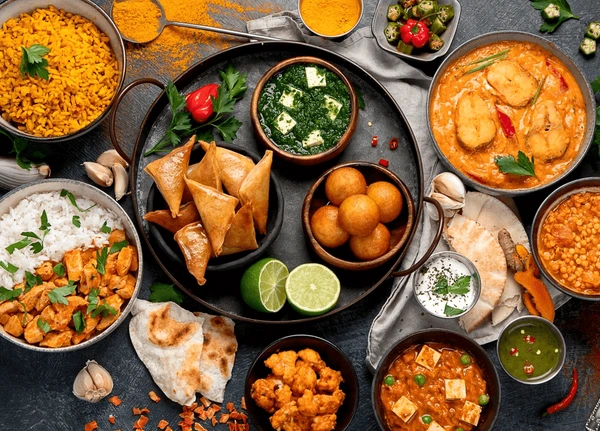

Cultural Insights

From Italy: Pasta Traditions
From Italy’s pasta traditions to Japan’s sushi craftsmanship, learn the origins and cultural significance of iconic dishes...Read More

Discover Asia’s Rich Culinary Tapestry
From Sushi to Curries, Discover Asia’s rich culinary tapestry. India’s best dal rice or curries to Arab cuisine...Read More